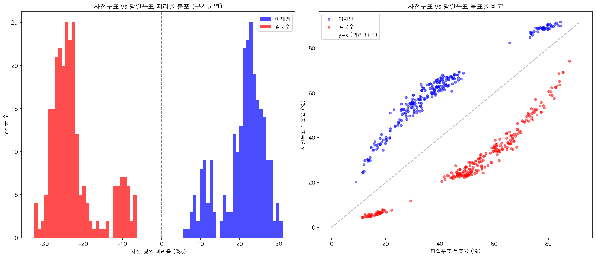
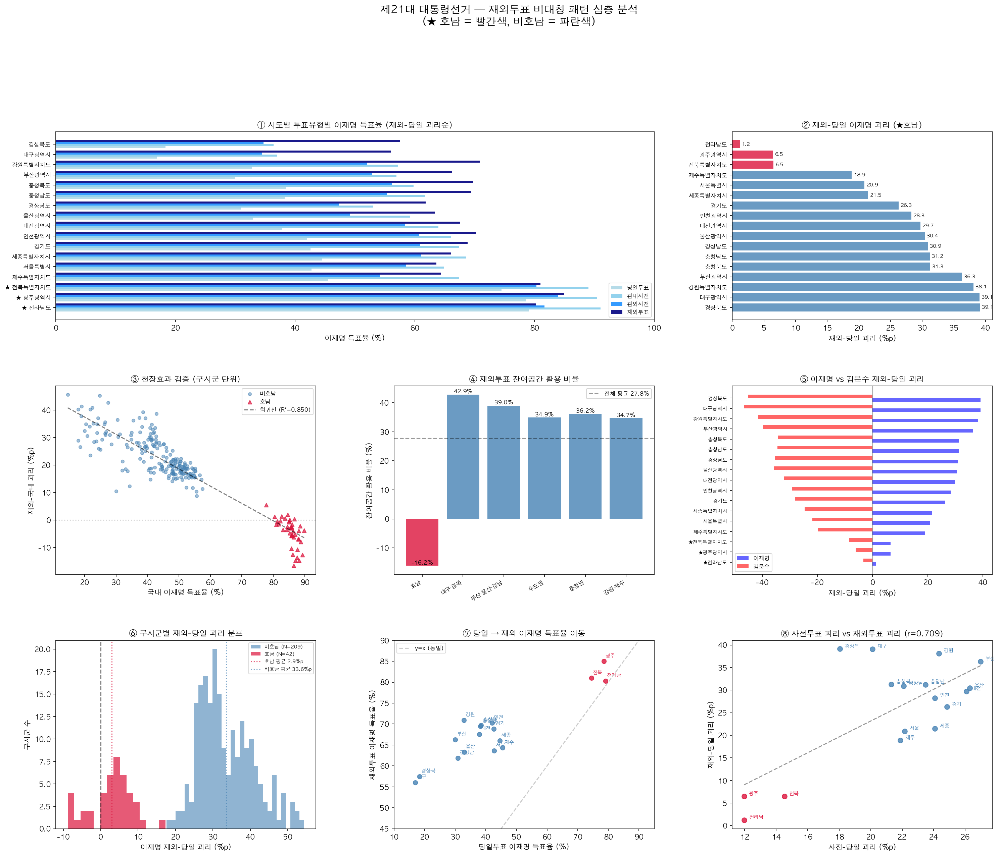
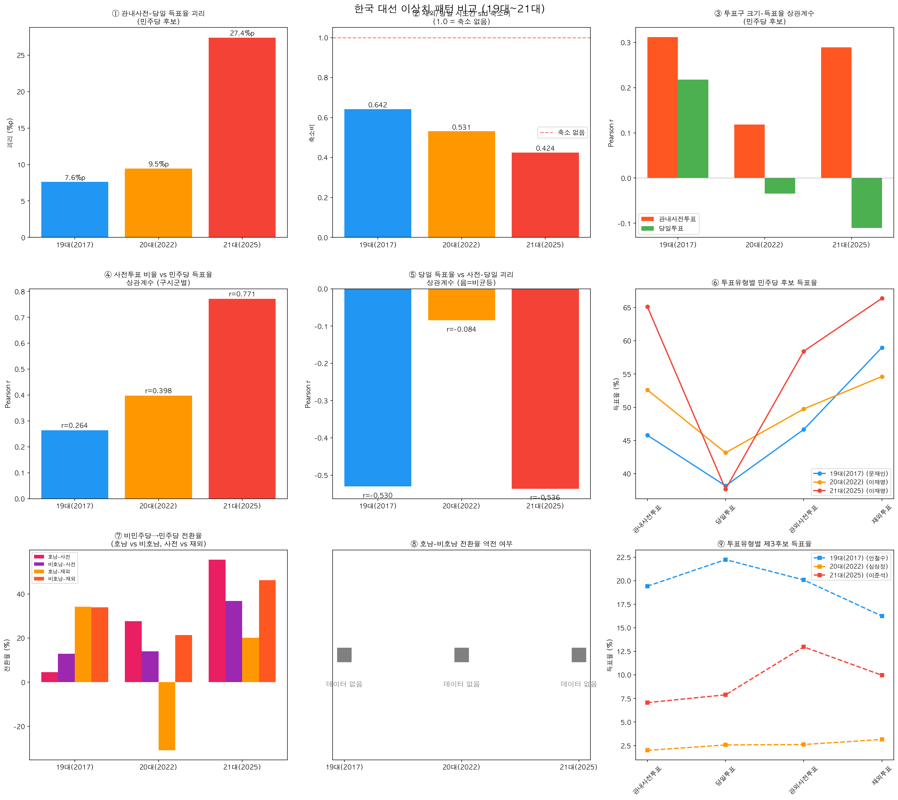

선관위 공식 개표결과 기반 통계 분석
제21대 대통령선거
투표 통계 변화 분석
22,691개 투표구 데이터 분석 · 2016~2025 대선·총선 6개 선거 비교
27.4%p
사전-당일 득표율 괴리
이전 최대의 약 2.3배
0.42
재외투표 지역 차이
잔존율 (1.0 중)
6개 선거
2016~2025
대선 3회 · 총선 3회
1. 이 보고서에 대해
한 줄 요약
2025년 6월 3일 치러진 제21대 대통령선거의 선관위 공식 개표결과를 통계적으로 분석하여,
이전 선거 대비 크게 달라진 패턴을 찾아본 보고서입니다.
분석 데이터
- 출처 — 중앙선거관리위원회 공식 개표결과
- 규모 — 전국 22,691행 (투표구 단위), 14개 컬럼
- 비교 대상 — 19대 대선(2017), 20대 대선(2022), 20~22대 총선(2016·2020·2024)
- 해외 참고 — 통계 분석으로 부정이 밝혀진 우크라이나 2004 대선 사례
이 보고서의 관점
이전 선거와 비교하여 통계적으로 큰 폭의 변화가 관찰된 항목들을 정리합니다.
변화가 크다는 것이 곧 부정을 의미하지는 않으며,
유권자 행태 변화, 인구학적 특성, 제도적 변화 등으로도 설명될 수 있습니다.
이 보고서는 "무엇이 얼마나 변했는지"를 수치로 보여주는 것이 목적이며, 원인에 대한 결론을 내리지 않습니다.
2. 핵심 발견 한눈에 보기
발견 1
+27.6%p
관내사전투표에서 이재명 득표율이
당일투표보다 27.6%p 더 높음
발견 2
0.42배
국내 62%p 지역 차이가
재외투표에서 29%p로 축소
발견 3
역전
비호남은 재외에서 +21%p 상승
전남·전북은 오히려 하락
정상으로 확인된 항목들
벤포드 법칙 — 득표수 숫자 분포 검증 정상 (p=0.274)
무효표율 — 투표유형 간 차이 미미 (0.6~0.97%)
집계 일관성 — 투표구 합산과 공식 결과 간 불일치 없음
투표구 크기-득표율 — 큰 투표구에서 이재명 득표율이 높아 보이나, 지역별로 나누면 차이 소멸 (도시-농촌 차이)
3. 사전투표에서만 유독 높은 이재명 득표율
무엇을 봤나?
같은 선거에서 사전투표로 투표한 사람들과 당일에 투표한 사람들의 결과가 얼마나 다른지를 비교합니다.
후보별 투표 방식에 따른 득표율
| 후보 | 당일투표 | 관내사전투표 | 괴리 |
|---|
| 이재명 | 37.96% | 65.54% | +27.58%p |
| 김문수 | 53.00% | 26.38% | -26.63%p |
| 이준석 | 7.94% | 7.11% | -0.84%p |
어느 정도의 괴리는 예상됩니다
사전투표 유권자는 연령·직업·지역 특성에서 당일투표 유권자와 다를 수 있으며,
이런 자기선택(self-selection) 효과로 일정 수준의 차이는 자연스럽습니다.
실제로 과거 선거에서도 2.9~11.7%p의 괴리가 존재했습니다.
아래에서는 21대 대선의 괴리가 이 범위를 크게 벗어나는 점에 초점을 맞춥니다.
같은 선거인데 투표 방식에 따라 27.6%p 차이
이재명 후보는 관내사전투표에서 65.54%, 당일투표에서 37.96%를 얻었습니다.
투표한 날짜만 다를 뿐인데, 결과가 완전히 다릅니다.
이 정도 차이는 정상인가?
과거 선거들에도 같은 분석을 적용하면, 21대 대선에서의 변화 폭을 비교할 수 있습니다.
* 총선은 지역구 민주당 vs 보수당 기준, 대선은 후보 기준
총선 비례대표 기준도 보기
| 선거 | 지역구 | 비례 제1당 | 비례 진보합산 |
|---|
| 20대 총선 (2016) | +2.9%p | +1.3%p | +1.3%p |
| 21대 총선 (2020) | +10.6%p | +8.2%p | +11.3%p |
| 22대 총선 (2024) | +11.7%p | +3.1%p | +11.1%p |
22대 비례 제1당(+3.1%p)이 낮은 이유: 진보 표가 더불어민주연합(+2.8%p)과 조국혁신당(+8.3%p)으로 분산
이전 선거 대비 큰 폭의 변화
2016~2024년 5개 선거의 사전-당일 괴리는 2.9~11.7%p 범위였습니다.
21대 대선의 27.4%p는 이전 최대(11.7%p)의 약 2.3배로, 이전과 큰 차이를 보입니다.
괴리가 지역마다 균등하지도 않습니다
자기선택 효과와 높은 지지율 지역의 천장효과를 감안하면,
지역마다 괴리 크기가 어느 정도 달라지는 것은 자연스럽습니다.
그러나 그 패턴의 형태는 살펴볼 가치가 있습니다.
| 당일 이재명 득표율 구간 | N | 사전-당일 괴리 |
|---|
| 0~20% (약세 지역) | 30 | +18.0%p |
| 20~40% (경쟁 지역) | 132 | +25.4%p (최대) |
| 40~50% | 49 | +24.2%p |
| 70~80% (강세 지역) | 30 | +13.3%p |
| 80~100% (압도적 강세) | 11 | +9.8%p |
* 강세 지역에서 괴리가 작아지는 것은 천장효과로 일부 설명 가능.
그러나 약세(0~20%)보다 중간(20~40%)에서 괴리가 더 큰 비선형 패턴은 천장효과만으로 설명되지 않습니다.
이재명 후보가 약한 지역일수록 사전투표 상승폭이 큰 경향이 있습니다
(r = −0.545, p < 0.001).

투표유형별 후보 득표율 비교
4. 해외투표에서 사라지는 지역 차이
무엇을 봤나?
한국 선거에서 지역마다 지지 정당이 크게 다릅니다 (호남은 민주당, 영남은 국민의힘 강세).
그런데 재외투표(해외에서 투표)에서는 이 지역 차이가 급격히 줄어들어, 거의 비슷한 결과가 나옵니다.
지역편차 비교
| 지표 | 당일투표 | 재외투표 | 잔존율 |
|---|
| 이재명 시도 간 표준편차 | 18.45% | 7.83% | 0.42배 |
| 김문수 시도 간 표준편차 | 18.35% | 6.21% | 0.34배 |
| 이재명 시도 간 범위 (최대-최소) | 62.2%p | 29.0%p | 0.47배 |
쉽게 말하면
당일투표에서 이재명 득표율은 지역마다 22%에서 84%까지 크게 차이(62.2%p)가 났습니다.
그런데 재외투표에서는 56%에서 85%로 범위가 절반 이하(29.0%p)로 줄어듭니다.
모든 시도에서 약 67% 부근으로 수렴합니다.
세 번의 대선에서 지역 차이 잔존율이 점차 낮아졌습니다
19대 대선 (2017)
0.551
지역 차이의 55%가 남음
20대 대선 (2022)
0.493
지역 차이의 49%가 남음
21대 대선 (2025)
0.424
지역 차이의 42%만 남음
* 잔존율 = 재외투표 시도 간 표준편차 / 당일투표 시도 간 표준편차. 1.0이면 차이가 그대로, 0이면 완전 소멸.
3개 대선의 관찰이므로 확정적 추세보다는 "같은 방향의 변화가 반복됨"으로 이해하는 것이 적절합니다.

재외투표 비대칭 패턴 분석
5. 호남에서만 역전되는 해외투표 결과
무엇을 봤나?
해외에서 투표한 유권자는 국내보다 이재명 후보를 더 많이 지지합니다.
비호남 13개 시도에서 예외 없이 재외투표 득표율이 국내보다 높습니다.
그런데 전남·전북에서는 정반대로 재외투표 득표율이 국내보다 오히려 낮아지며,
광주는 거의 변동 없이(+0.20%p) 상승세가 사실상 소멸합니다.
21대 대선 (2025) — 시도별 재외투표 비교
어떤 국내 투표 방식과 비교하든, 비호남은 재외투표에서 이재명 득표율이 예외 없이 상승합니다. 호남만 다릅니다.
| 시도 |
당일 | 사전 | 국내
전체 | 재외 |
재외
-국내 | 재외
-당일 | 재외
-사전 |
| 전남 | 79.07 | 89.10 | 85.92 | 80.28 | -5.64 | +1.21 | -8.82 |
| 전북 | 74.49 | 87.14 | 82.69 | 80.98 | -1.71 | +6.49 | -6.16 |
| 광주 | 78.53 | 88.54 | 84.79 | 84.99 | +0.20 | +6.46 | -3.55 |
| 제주 | 45.46 | 64.93 | 54.72 | 64.34 | +9.62 | +18.88 | -0.59 |
| 세종 | 44.53 | 66.58 | 55.57 | 65.99 | +10.42 | +21.46 | -0.59 |
| 서울 | 42.71 | 62.88 | 47.05 | 63.60 | +16.55 | +20.89 | +0.72 |
| 경기 | 42.56 | 65.43 | 52.11 | 68.84 | +16.73 | +26.28 | +3.41 |
| 인천 | 42.00 | 64.56 | 51.59 | 70.27 | +18.68 | +28.27 | +5.71 |
| 대전 | 37.86 | 62.27 | 48.43 | 67.59 | +19.16 | +29.73 | +5.32 |
| 울산 | 32.90 | 56.74 | 42.48 | 63.34 | +20.86 | +30.44 | +6.60 |
| 충남 | 38.22 | 60.13 | 47.61 | 69.44 | +21.83 | +31.22 | +9.31 |
| 충북 | 38.46 | 58.86 | 47.41 | 69.73 | +22.32 | +31.27 | +10.87 |
| 경남 | 30.91 | 51.63 | 39.34 | 61.83 | +22.49 | +30.92 | +10.20 |
| 부산 | 29.94 | 55.72 | 40.01 | 66.25 | +26.24 | +36.31 | +10.53 |
| 강원 | 32.80 | 56.12 | 43.88 | 70.92 | +27.04 | +38.12 | +14.80 |
| 경북 | 18.33 | 35.99 | 25.41 | 57.46 | +32.05 | +39.13 | +21.47 |
| 대구 | 16.91 | 36.19 | 23.10 | 55.98 | +32.88 | +39.07 | +19.79 |
| 호남 평균 | 77.36 | 88.26 | 84.47 | 82.08 | -2.38 | +4.72 | -6.18 |
| 비호남 평균 | 35.26 | 57.00 | 44.19 | 65.40 | +21.20 | +30.14 | +8.40 |
* 사전 = 관내+관외 합산, 국내전체 = 당일+사전 합산, 득표율 = 유효표 기준 (%)
비호남 209개 구시군 중 재외투표에서 이재명 득표율이 하락한 곳: 0개
호남 42개 구시군 중 하락한 곳: 9개 (21%)
20대 대선 (2022) — 같은 패턴, 더 큰 변화
20대 대선에서도 동일한 패턴이 나타나며, 하락 폭은 더 큽니다.
| 시도 | 당일투표 | 재외투표 | 변화 |
|---|
| 전남 | 83.73% | 72.67% | ↓ 11.06%p |
| 광주 | 82.25% | 76.77% | ↓ 5.48%p |
| 전북 | 79.94% | 75.12% | ↓ 4.82%p |
핵심 질문
해외에 사는 유권자는 비호남 출신이든 호남 출신이든 동일한 환경(해외)에서 투표합니다.
비호남 출신은 예외 없이 이재명 지지가 올라가는데,
호남 출신만 오히려 내려가는 이유는 무엇일까요?
"이미 80%가 넘으니 더 못 올라간다"는 반론에 대해
천장효과(ceiling effect) 반론의 한계
① 사전투표에서는 호남 득표율이 84% → 93%까지 올라갔습니다. 올라갈 여지가 있습니다.
② 비호남에서 비지지층의 약 30%가 재외에서 이재명으로 이동했다면, 호남도 비슷한 비율(나머지 16%의 30% = +5%p)로 올라야 합니다.
③ "올라가지 않는 것"과 "오히려 내려가는 것"은 완전히 다른 이야기입니다. 천장효과로는 하락을 설명할 수 없습니다.
19대 대선 (2017, 문재인) — 이 패턴은 없었습니다
19대 대선에서는 호남이든 비호남이든, 재외투표에서 문재인 득표율이 국내보다 비슷하게 올라갔습니다.
호남에서만 내려가는 현상은 20대(2022)부터 나타났습니다.
| 19대 (문재인) | 20대 (이재명) | 21대 (이재명) |
|---|
| 호남: 재외 vs 국내 |
↑ 상승 |
↓ 하락 (평균 -7%p) |
↓ 하락 (전남 -5.6%p) |
| 비호남: 재외 vs 국내 |
↑ 상승 |
↑ 상승 |
↑ 상승 (평균 +21%p) |
| 호남 역전 발생? |
없음 |
발생 |
발생 |

19대~21대 대선 주요 지표 비교
6. 세 번의 대선 비교: 이 패턴은 언제부터?
왜 과거 선거를 비교하나?
"사전투표에서 진보 후보가 더 잘 나오는 건 원래 그렇다"는 반론이 있을 수 있습니다.
그래서 같은 분석을 19대(2017), 20대(2022) 대선에도 동일하게 적용하여,
21대 대선에서 변화 폭이 얼마나 커졌는지 확인했습니다.
핵심 지표 비교
| 지표 |
19대 (2017)
문재인 |
20대 (2022)
이재명 |
21대 (2025)
이재명 |
변화 |
| 사전-당일 괴리 | 7.6%p | 9.5%p |
27.4%p |
2배 이상 확대 |
| 재외투표 지역 차이 잔존율 | 0.551 | 0.493 |
0.424 |
점진 축소 |
| 호남 재외투표 역전? |
없음 |
발생 |
발생 |
20대부터 |
타임라인
2016 — 20대 총선
지역구 괴리 +2.9%p. 사전투표 도입 초기, 영향 미미.
2017 — 19대 대선 (문재인)
괴리 +7.6%p. 호남 재외 역전 없음. 세 대선 중 괴리가 가장 작았던 시점.
2020 — 21대 총선
지역구 괴리 +10.6%p. 코로나19로 사전투표율 증가, 괴리 확대.
2022 — 20대 대선 (이재명)
호남 재외 역전 첫 발생 괴리 +9.5%p. 호남 재외 득표율 국내 대비 평균 -7%p.
2024 — 22대 총선
지역구 괴리 +11.7%p. 21대 총선과 유사한 수준 유지.
2025 — 21대 대선 (이재명)
괴리 2배 이상 확대 +27.4%p. 호남 재외 역전 지속. 지역 차이 잔존율 0.424.
* 총선(지역구)과 대선(후보 간 대결)은 투표 동기와 후보 구도가 다르므로 직접 비교에 한계가 있습니다.
대선 간 비교(19대 → 20대 → 21대)가 보다 적절한 기준입니다.
변화의 시작 시점
이 패턴들은 19대(2017)에서 21대(2025)로 올수록 변화 폭이 점점 커지고 있습니다.
호남 재외 역전은 20대(2022)부터, 사전-당일 괴리 확대는 21대(2025)에서 두드러지며,
19대에서도 괴리(7.6%p)와 재외투표의 지역 차이 축소(잔존율 0.551)가 이미 존재했습니다.
이것이 언제부터 시작되었는지는 추가 분석이 필요한 질문입니다.
7. 참고 — 통계 분석으로 부정이 밝혀진 해외 사례
우크라이나 2004 대선
2004년 우크라이나 대선 결선투표에서 특정 지역의 투표율과 득표율이 동시에 비정상적으로 급등하는
통계적 이상치가 발견되었습니다. 이를 계기로 국제 감시단 조사가 이루어져
대규모 표 조작이 확인되었고, 대법원이 결선을 무효 처리했습니다.
이 사례는 통계적 이상치 분석이 선거 검증의 출발점이 될 수 있음을 보여줍니다.
참고: Myagkov, Ordeshook & Shakin (2009). The Forensics of Election Fraud: Russia and Ukraine. Cambridge UP.
8. 결론과 열린 질문
주요 변화
이전 선거 대비 크게 달라진 패턴들
① 사전투표에서만 이재명 득표율 27.4%p 상승 (이전 최대의 2배 이상)
② 재외투표에서 지역 차이가 절반 이하로 축소 (잔존율 0.42)
③ 전남·전북에서 재외투표 득표율 하락, 광주는 정체 (비호남은 전원 상승)
이 패턴들은 19대(2017)부터 존재하며, 21대(2025)에서 변화 폭이 가장 큽니다.
추가 검토가 필요한 질문들
-
27.4%p 괴리의 원인 —
유권자의 자기 선택(self-selection)만으로 설명되는가?
22대 총선 지역구에서도 괴리가 11.7%p였는데, 21대 대선은 왜 27.4%p까지 벌어졌는가?
-
재외투표 수렴의 원인 —
해외 거주자의 인구학적 동질성으로 62%p 범위가 29%p로 줄어드는 것이 설명 가능한가?
-
호남 역전의 메커니즘 —
해외에 사는 호남 출신만 이재명을 국내보다 덜 지지하는 이유는 무엇인가?
사전투표에서는 더 지지했는데?
이 보고서의 한계
통계적 변화가 크다는 것이 곧 부정행위의 증거는 아닙니다.
최종 판단에는 물리적 증거, 제도적 맥락, 유권자 행태 조사 등이 함께 필요합니다.
이 보고서는 "무엇이 얼마나 변했는지"를 데이터로 보여주는 것에 목적이 있습니다.
9. 데이터 출처
원본 데이터
| 데이터 | 출처 | 규모 |
|---|
| 제21대 대통령선거 개표결과 | 중앙선거관리위원회 (nec.go.kr) | 22,691행 |
| 제20대 대통령선거 개표결과 | data.nec.go.kr | 22,754행 |
| 제19대 대통령선거 개표결과 | data.nec.go.kr | 22,216행 |
| 제20~22대 총선 비례대표 개표결과 | data.nec.go.kr | 각 22,000행+ |
분석 스크립트
| 파일 | 설명 |
|---|
scripts/clean_data.py | 원본 XLSX → CSV 정제 |
scripts/analyze_anomalies.py | 4방향 이상치 분석 |
scripts/analyze_overseas_asymmetry.py | 재외투표 비대칭 분석 |
scripts/analyze_multiangle.py | 다각도 이상치 탐색 |
scripts/analyze_benford_deep.py | 벤포드 법칙 심층 분석 |
scripts/analyze_past_elections.py | 19대~21대 비교 분석 |
참고문헌
- Klimek et al. (2012). "Statistical detection of systematic election irregularities." PNAS, 109(41).
- Beber & Scacco (2012). "What the Numbers Say: A Digit-Based Test for Election Fraud." Political Analysis, 20(2).
- Myagkov, Ordeshook & Shakin (2009). The Forensics of Election Fraud: Russia and Ukraine. Cambridge UP.
- Nigrini (2012). Benford's Law: Applications for Forensic Accounting. Wiley.
- Deckert, Myagkov & Ordeshook (2011). "Benford's Law and the Detection of Election Fraud." Political Analysis, 19(3).